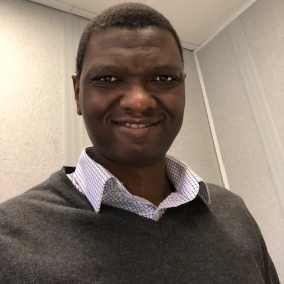

Oyebanjo Oke, PhD

Contact Details
Work Experience
- Lead Process Engineer - BASF Antwerp (2020 - Present)
- Process engineer in Front End design team, discipline lead for various investment projects of up to €50 million.
- Acting as single point of contact for developing and maintaining projects Piping & Instrumentation Diagrams (P&IDs), leading and coordinating P&ID reviews.
- Leading and coordinating Safety Health & Environment (SHE) and HAZOP reviews for different investment projects, championing the execution of open points for safety studies.
- Designing, sizing and preparing technical datasheets of process engineering items including safety valves, breather valves, control valves, pumps, compressors, heat exchangers etc. according to industry standards.
- Coordinating project deliverables with contractors and sub-contractors to ensure cost, schedule and scope optimization.
- Coordinating Management of Change (MOCs) for different process units, and providing relevant process information and deliverables for time execution of the changes.
- R&D Process Engineer - Procter & Gamble Brussels Innovation Center (2017-2020)
- I led cross-functional teams to generate initiatives for sustainable process engineering, Reblend management and scrap control of Laundry Soluble Unit dose products resulting in more $1million savings per year.
- I leveraged Advanced Modeling and simulation for troubleshooting and investigation of technical feasibility of process optimization in liquid making and variant changeover.
- I drove global technical solutions to minimize regional re-work in the execution of new and on-going initiatives/projects. This includes definition of harmonized process centerlines across our manufacturing sites in Europe, Asia and North America.
- Graduate Production Engineer - Lafarge-Holcim (UNICEM) Cement Company, Nigeria (2010-2011)
- I managed daily production reporting, monitoring and compilation of key performance indicators to senior management.
- I Supervised clinker production lines, coordinating plant’s house-keeping activities in the raw-mill and the kiln areas.
- I provided technical expertise, leadership and direction to various work groups around the raw mill and kiln process areas.
Education
- PhD. Chemical Engineering 2011 - 2016
University College London, London, United Kingdom.
My Publications
- MSc. Chemical Process Engineering 2009-2010:
University College London, London, United Kingdom.
Grade: Distinction
- BSc. Chemical Engineering 2001 - 2006
University of Lagos, Nigeria.
Grade: 4.18/5.00
Awards & Scholarships
- I won the prominent University College London Overseas Research Scholarship for research in CFD modeling of homogeneous expansion and lateral solid mixing in gas-fluidized beds
- I emerged the best student in chemical engineering department at University College London, achieving distinction grades in all taught and research modules
- I won the prestigious Petroleum Technology Development Fund (PTDF) postgraduate scholarship award securing first position in process engineering examination
- I obtained a distinguished award for significant contribution to national service in the area of youth development and millennium development goals
- I emerged as the Best student in 2004/2005 University of Lagos semester exams with a grade point of 4.95/5.00
Others